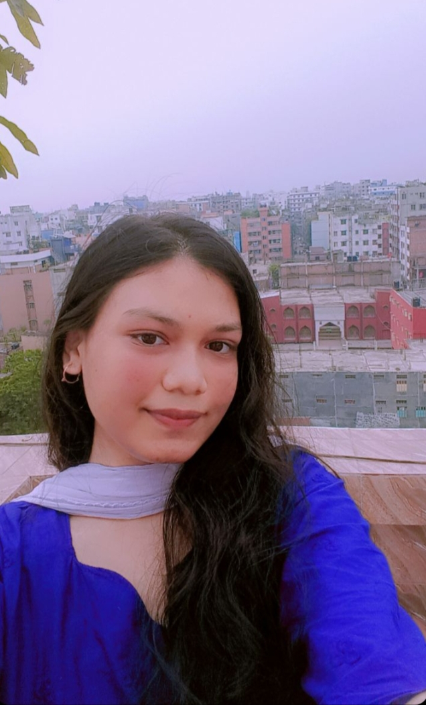

EN: Bangladesh gained independence in 1971 after a bloody war... BN: বাংলাদেশ ১৯৭১ সালে রক্তক্ষয়ী যুদ্ধে স্বাধীনতা লাভ করে...
EN: Bangladesh gained its independence in 1971 after a bloody liberation war. Rooted in the Language Movement and nationalism, the new nation rose with determination. After independence, it rebuilt and gradually adopted economic and democratic reforms. In the 2000s, the "Digital Bangladesh" vision emerged. Today, the country is recognized as a fast-growing economy with the dream of becoming a Smart Bangladesh by 2025. BN: বাংলাদেশ ১৯৭১ সালে একটি রক্তক্ষয়ী মুক্তিযুদ্ধের মাধ্যমে স্বাধীনতা অর্জন করে। ভাষা আন্দোলন ও জাতীয়তাবাদী চেতনায় দেশটি গঠিত হয়। স্বাধীনতার পর পুনর্গঠন ও গণতন্ত্র প্রতিষ্ঠা হয়। ২০০০ সালে ডিজিটাল বাংলাদেশ ধারণা চালু হয়। ২০২৫ সালের মধ্যে একটি স্মার্ট বাংলাদেশ গড়ার লক্ষ্যে অগ্রসর হচ্ছে।
click For More Information
Culture / সংস্কৃতি
EN: Bangladesh has a rich cultural heritage from ancient traditions... BN: বাংলাদেশের সংস্কৃতি প্রাচীন ঐতিহ্যে পরিপূর্ণ...
EN: Bangladesh boasts a diverse and rich cultural heritage. Folk songs, poetry, crafts, and traditional festivals form its cultural identity. Urban modernity blends with rural traditions. Celebrations like Pohela Boishakh and Language Martyrs’ Day reflect unity in diversity. Young generations today embrace both technology and tradition. BN: বাংলাদেশের সংস্কৃতি হাজার বছরের প্রাচীন ঐতিহ্যে ভরপুর। লোকসঙ্গীত, পুঁথিপাঠ, ও নকশিকাঁথা এর গুরুত্বপূর্ণ অংশ। শহরের আধুনিকতা ও গ্রামের ঐতিহ্য একত্রে বাস করে। পহেলা বৈশাখ ও একুশে ফেব্রুয়ারি জাতীয় ঐক্যের প্রতীক। তরুণ সমাজ এখন প্রযুক্তি ও সংস্কৃতি একত্রে ধারণ করছে।
click For More Information
Food / খাবার
EN: Bangladeshi food is flavorful and diverse... BN: বাঙালি খাবার স্বাদে অনন্য...
EN: Bangladeshi food is known for its variety and richness. Dishes like hilsa fish, biryani, pitha, and khichuri carry cultural significance. While global cuisines have entered cities, traditional food still rules homes. Regional flavors reflect Bangladesh’s culinary diversity. Food is not just nourishment, it’s culture. BN: বাঙালি খাবার স্বাদে ও বৈচিত্র্যে অনন্য। ইলিশ, বিরিয়ানি, পিঠা ও খিচুড়ি ঐতিহ্যের অংশ। শহরে আন্তর্জাতিক খাবার জনপ্রিয় হলেও ঘরে ঘরে দেশীয় রান্না চলে। অঞ্চলভেদে ভিন্ন স্বাদে পরিপূর্ণ। খাবার কেবল খাওয়ার উপকরণ নয়, এটি আমাদের সংস্কৃতির প্রতিচ্ছবি।
click For More Information
Festivals / উৎসব
EN: Festivals unite Bangladesh with color and joy... BN: উৎসব বাংলাদেশকে আনন্দে ভরিয়ে তোলে...
EN: Festivals in Bangladesh are joyful gatherings. Celebrations like Eid, Durga Puja, and Bengali New Year unite people across religions and regions. Cultural fairs, music, and food create vibrant atmospheres. These events reflect harmony, heritage, and happiness. BN: বাংলাদেশে উৎসব মানে আনন্দ ও ঐক্য। ঈদ, দুর্গাপূজা, পহেলা বৈশাখ সব ধর্ম ও অঞ্চলের মানুষকে একত্র করে। মেলা, গান, ও খাবারের মাধ্যমে উৎসব প্রাণ পায়। এইসব উৎসব ধর্মীয় সহনশীলতা ও সংস্কৃতির পরিচয় বহন করে।
click For More Information
Seasons / ঋতু
EN: Bangladesh enjoys six seasons with unique charm... BN: বাংলাদেশের ছয়টি ঋতুর রয়েছে আলাদা রূপ...
EN: Bangladesh experiences six distinct seasons: summer, monsoon, autumn, late autumn, winter, and spring. Each brings its own beauty and character — from lush rains and blooming flowers to foggy mornings and harvest festivals. These seasonal transitions shape rural life, agricultural rhythms, and cultural traditions. BN: বাংলাদেশে ছয়টি ঋতু রয়েছে: গ্রীষ্ম, বর্ষা, শরৎ, হেমন্ত, শীত এবং বসন্ত। প্রতিটি ঋতু নিজস্ব সৌন্দর্য ও বৈশিষ্ট্য নিয়ে আসে। গ্রামের জীবন, কৃষিকাজ ও উৎসবগুলো এসব ঋতুর ছোঁয়ায় গঠিত হয়।
click For More Information
Sports / খেলা
EN: Sports, especially cricket, are a national passion... BN: খেলাধুলা, বিশেষ করে ক্রিকেট, জাতীয় আবেগ...
EN: Bangladeshis are passionate about sports, with cricket being the most popular. The national cricket team enjoys wide support. Football, kabaddi, and traditional games also hold significance. Kabaddi, also known as Ha-du-du, is the national sport of Bangladesh and reflects rural vibrancy. Sporting events inspire national pride and bring communities together. BN: বাংলাদেশে খেলাধুলার প্রতি মানুষের প্রবল আগ্রহ রয়েছে। ক্রিকেট সবচেয়ে জনপ্রিয়। জাতীয় দল সবার প্রিয়। ফুটবল, কাবাডি ও ঐতিহ্যবাহী খেলাগুলোরও গুরুত্ব আছে। কাবাডি, যা হাডুডু নামে পরিচিত, বাংলাদেশের জাতীয় খেলা এবং এটি গ্রামের প্রাণবন্ততার প্রতিচ্ছবি। এসব খেলা জাতীয় ঐক্য ও গর্বের প্রতীক।
click For More Information
Rivers / নদী
EN: Rivers shape Bangladesh’s geography and life... BN: নদী বাংলাদেশের জীবনধারার অংশ...
EN: Rivers are vital to Bangladesh’s identity. The Ganges, Brahmaputra, and Meghna form the world’s largest delta. Rivers support agriculture, transport, and daily life. Floods, erosion, and riverine beauty are part of the nation’s environmental and cultural narrative. BN: নদী বাংলাদেশের ভূগোল ও জীবনের অবিচ্ছেদ্য অংশ। পদ্মা, যমুনা, মেঘনা মিলে গঠিত বিশ্বের বৃহত্তম ব-দ্বীপ। নদীর সঙ্গে দেশের কৃষি, পরিবহন, সংস্কৃতি ও জীবনযাত্রা ওতপ্রোতভাবে জড়িত।
click For More Information
Politics / রাজনীতি
EN: Politics is vibrant and sometimes intense... BN: রাজনীতি বাংলাদেশের সমাজে গুরুত্বপূর্ণ...
EN: Politics in Bangladesh plays a crucial role in shaping national policy and governance. The nation follows a parliamentary system with competitive elections. Political movements, democracy, and youth involvement have always been dynamic. Political awareness is high among citizens. BN: বাংলাদেশে রাজনীতি জাতীয় নীতিনির্ধারণ ও শাসনব্যবস্থায় গুরুত্বপূর্ণ ভূমিকা রাখে। সংসদীয় পদ্ধতিতে নির্বাচন অনুষ্ঠিত হয়। রাজনৈতিক আন্দোলন ও গণতন্ত্রের ধারা বরাবরই সক্রিয়। নাগরিকদের মধ্যে রাজনৈতিক সচেতনতা তুলনামূলকভাবে বেশি।
More details
Face of the Magazine

SHE shared the idea how we can convert মৃৎশিল্প to modern art —
A true blend of root culture and future vision. 🌍✨
💭 Shape Your Soul magazine চায় তোমার ভাবনাও শুনতে — Share your thought: How can our root culture rule the modern world? Sent your idea to us and we will select the best one.